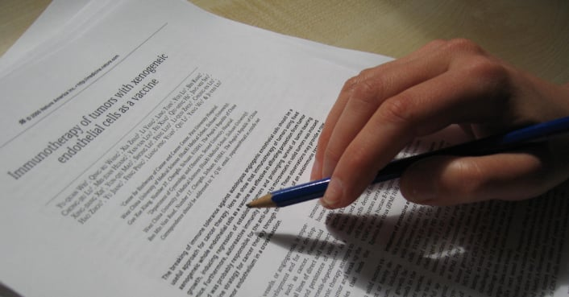

Biblioteca Virtual
Conhecimento, reflexões e descobertas sobre a preservação ambiental e cultural, para informar, inspirar e promover o diálogo por um futuro mais sustentável.
Por meio dos artigos publicados, compartilhamos experiências, pesquisas e iniciativas que fazem a diferença na conservação dos solos, da água e da biodiversidade.